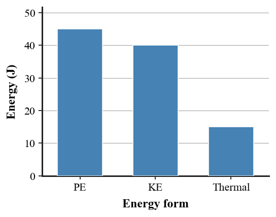

1. State the work-energy theorem in words.
2. What does conservation of energy say about total energy?
3. Name the energy form commonly produced when friction warms surfaces.
4. What does “system” mean in an energy analysis?
5. Can mechanical energy decrease while total energy is conserved? Answer yes/no and name one possible destination.
6. The graph represents a 100 J energy account at one instant. Verify the total and identify how much of the energy is mechanical versus thermal.

7. A sled has 90 J of gravitational potential energy at the top of a frictionless hill and negligible kinetic energy. How much kinetic energy can it have at the bottom if the reference PE there is zero?
8. A cart’s kinetic energy rises from 20 J to 65 J. What does the work-energy theorem say about the sign and amount of net work on the cart?
9. A skateboarder starts with 120 J of mechanical energy. Later the skateboarder has 95 J of mechanical energy and the wheels/ramp gained thermal energy. How much thermal energy must be included for a complete 120 J account?
10. A 2 kg cart slows from 5 m/s to 3 m/s. Calculate the initial and final kinetic energies and determine how much kinetic energy was removed by net work.
11. A student draws an energy chart for a descending roller coaster in which PE falls by 50 J, KE rises by 30 J, and no other bar changes. Critique the model and propose the missing energy account.
12. A bicycle skids to rest and its tire warms. Explain the event using net work, kinetic-energy change, thermal energy, and system boundaries.
13. Net work on an object changes its
14. Conservation of energy means total energy
15. Friction commonly changes mechanical energy into
16. A pendulum has 50 J PE at its highest point and negligible losses. At the lowest point its KE can be
17. If KE increases by 35 J, net work on the object is
18. A 100 J account contains 55 J KE and 15 J thermal energy. The remaining PE is
19. When mechanical energy seems to disappear during braking, the best explanation is that energy
20. An energy bar chart is physically consistent when